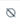
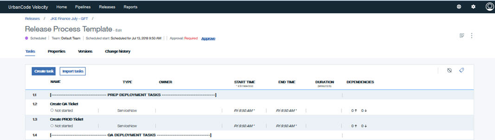

Managing tasks
A list of associated tasks can be viewed from a deployment plan page. The list of tasks include details about the task. You use action icons to change the task's status during a deployment, such as start or skip a task.
Each task in a deployment plan is contained in a separate row. Use the show icon () to show or remove associated tasks from the list. You can also show or hide tags with the tag icon ( ).
).
The information that is displayed for each task is described in the following table. 
| Property | Description |
|---|---|
| Name | Task name |
| Type | Type of task: Delayed, Deployment Risk Analysis, Email, Header/Note, Jenkins, Manual, Run another plan, ServiceNow, UrbanCode Deploy, and Wait for approval. |
| Status | Task status: Not started, complete, failed, skipped, not applicable |
| Owner | Person to whom the task is assigned |
| Start time | Start time or expected start time based on scheduled start, or estimated duration of other tasks |
| End time | Time that the task resolved |
| Duration | Length of time in minutes from task start to task resolution. |
| Dependencies | Indicates the number of tasks that are prerequisites for the task, and dependent on the task |
| Action icons | One or more actions used to change the status of the task during a deployment |
Tasks are listed in the order that they run. The order of the tasks can be changed by selecting one or more task and dragging to the new location.
At the end of each row are applicable action icons associated with the task. Depending on the task you can perform one or more of the following actions.
- Start task ()
- Skip task ()
- Re-run task ()
- Complete task ()
- Fail task ()
You can manage the tasks in a deployment plan from the task bar above the table. When a task is selected, the task bar displays and you can perform the following actions.
- Edit
- To copy a task or group, select one or more tasks and click Copy, and then place the cursor where you want to insert the copied task and click Paste.
- To cut a task or group from a deployment plan, select the task and click Cut.
- To delete a task, select the task and click Delete. The task is removed from the deployment plan.
- To create a group of tasks that can run simultaneously, select the tasks and click Create parallel group. The group must consist of at least two tasks.
- To create a group of tasks that are to consecutively, select the tasks and click Create sequential group. This is the default execution pattern.
- To add and remove tasks that must complete first, select the task and click Manage additional prerequisites. In the dialog box, select or type the prerequisite task. Click X to remove a prerequisite. When finished, click Save.
- To add or remove tags, select the task and click Manage tags. In the dialog box, type or select tags to add. To remove a tag, click X. When finished, click Save.
- To view information about when the task started, completed, and errors, click View execution log.
Parent topic: Tasks